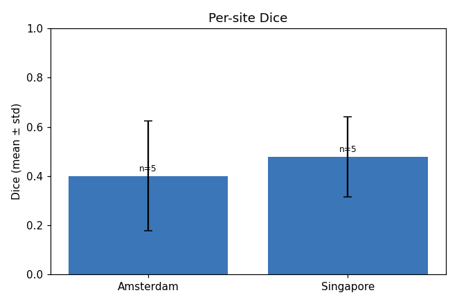
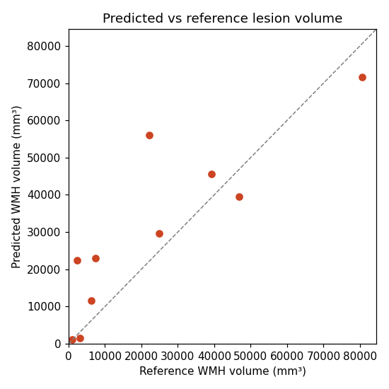

Subjects: 10
Mean Dice: 0.4396 (median 0.4417, min 0.0715, max 0.7076)
Predicted/reference volume ratio: 2.2662 (median 1.2657)
| Baseline | Mean Dice | Median Dice | Mean volume ratio | Mean FP voxels | Mean FN voxels | Model wins | Baseline wins | Ties |
|---|---|---|---|---|---|---|---|---|
| all_zero | 0.0000 | 0.0000 | 0.0000 | 0 | 7216 | 10 | 0 | 0 |
| all_positive | 0.0051 | 0.0031 | 2043.3791 | 2820560 | 0 | 10 | 0 | 0 |
| spatial_prior_only | 0.0498 | 0.0321 | 3.1909 | 3683 | 6809 | 10 | 0 | 0 |


| Subject | Site | Dice | Raw voxels | Lesions | Predicted vol (mm³) | Reference vol (mm³) | FP voxels | FN voxels | Volume ratio |
|---|---|---|---|---|---|---|---|---|---|
| Amsterdam_GE3T_111 | Amsterdam | 0.4602 | 16,496 | 19 | 56,048.2 | 22,082.5 | 10,828 | 1,167 | 2.5381 |
| Singapore_70 | Singapore | 0.3222 | 8,243 | 32 | 22,983.0 | 7,368.0 | 6,031 | 826 | 3.1193 |
| Amsterdam_GE3T_117 | Amsterdam | 0.5704 | 11,502 | 15 | 39,489.0 | 46,907.3 | 4,224 | 6,334 | 0.8419 |
| Singapore_71 | Singapore | 0.6333 | 10,402 | 33 | 29,628.0 | 24,843.0 | 4,127 | 2,532 | 1.1926 |
| Amsterdam_GE3T_118 | Amsterdam | 0.0715 | 7,094 | 56 | 22,367.3 | 2,415.3 | 6,110 | 435 | 9.2606 |
| Singapore_72 | Singapore | 0.7076 | 24,215 | 17 | 71,544.1 | 80,511.1 | 5,916 | 8,905 | 0.8886 |
| Amsterdam_GE3T_119 | Amsterdam | 0.6783 | 13,787 | 39 | 45,606.4 | 39,267.5 | 4,784 | 2,981 | 1.1614 |
| Singapore_73 | Singapore | 0.3068 | 571 | 11 | 1,209.0 | 903.0 | 295 | 193 | 1.3389 |
| Amsterdam_GE3T_120 | Amsterdam | 0.2224 | 4,249 | 63 | 11,633.6 | 6,296.7 | 2,742 | 1,224 | 1.8476 |
| Singapore_74 | Singapore | 0.4232 | 734 | 6 | 1,449.0 | 3,060.0 | 165 | 702 | 0.4735 |